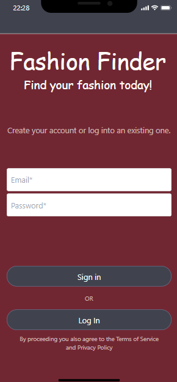

Problem Statement: Finding your Fashion
Our users are not aware of the amount of possible fashionable outfits they already have in their own closet. This leads to people buying excessive amounts of clothes, rather than regularly rotating the clothes they already own. Our solution would implement a machine learning algorithm to put together outfits from already owned clothes for users. This allows our users to have more outfits without buying more clothes.
Affinity Diagram: Fashion Finder
The Fashion Finder JamBoard consists of all the things the app will be capable of and why everyone should have it downloaded to their cellular device.
Personna: 6 Personnas for Fashion Finder
Personnas for all different kinds of users who would use Fashion Finder.
Storybooard for Clark Johnson
This storyboard shows a situation to use Fashion Finder!
Sketches For The Fashion Finder App
These sketches give you a sneak peak on what our Fashion Finder app is going to look like!
Paper Prototype

A paper prototype of the Fashion Finder app!
Hifi Prototype
Play around with a prototype of the Fashion Finder app!